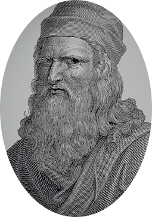

레오나르도 다빈치

르네상스를 대표하는 화가, 조각가, 건축가, 미술 이론가였던 레오나르도는
1452년 이탈리아 토스카나 지방의 빈치에서 공증인의 사생아로 태어났다.
열다섯 살에 피렌체의 유명한 조각가이자 화가인 안드레아 델 베로키오의 공방으로 들어가
해부학, 원근법, 드로잉을 비롯한 미술의 기초를 배웠다.
1482년 밀라노로 간 레오나르도는 스포르차 공작의 화가이자 군사기술자, 건축가로 일하며 18년을 머물렀고,
이곳에서 다양한 분야의 학자들과 교류하며 수력학, 해부학, 식물학, 광학 등 온갖 분야에 대한 관심을 키워나갔다.
레오나르도는 윤곽선을 희미하게 처리해 경계를 모호하게 만드는 스푸마토(sfumato) 기법을 이용해 모나리자를 그렸고,
미켈란젤로와의 경쟁으로 잘 알려진 베키오 궁의 벽화 앙기아리 전투에 착수했지만 완성하지 못했다.
이 그림은 현재 밑그림만 전해지고 있다. 레오나르도의 그림은 라파엘로를 비롯한 전성기 르네상스 화가들에게 큰 영향을 미쳤다.
1512년 로마로 갔던 레오나르도는 1516년 프랑스의 프랑수아 1세의 초청을 받아 프랑스로 이주해 말년을 보냈고,
1519년 앙부아즈의 클로 뤼세(Clos-Luce)에서 세상을 떠났다.레오나르도는 미술뿐 아니라 음악, 과학, 해부학,
천문학 등에 정통했으며, 직접 관찰하고 실험한 결과를 글과 스케치로 남겼다.